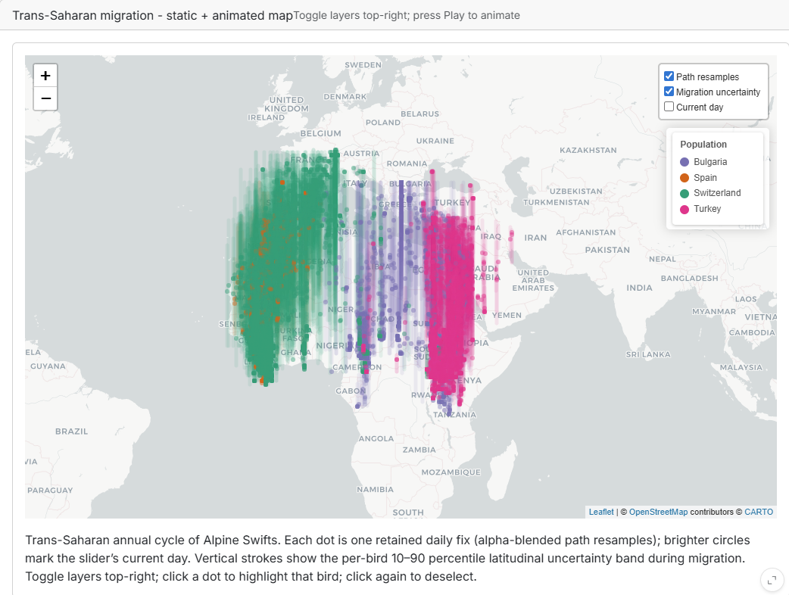

Dashboard Context and Goals
The Alpine Swift (Tachymarptis melba) is a small aerial insectivore that spends the majority of its life airborne. The species is capable of completing trans-Saharan migration in approximately one week, which represents one of the shortest migration durations recorded among long-distance migrants [@meier2020]. Between 2014 and 2016, the Swiss Ornithological Institute conducted a long-term tracking study of the trans-Saharan migratory cycle using light-level geolocators. Individuals from four populations were tagged along a twelve-degree latitudinal gradient: Pirasali Island (Turkey), Tarragona (Spain), Sofia (Bulgaria), and multiple colonies in Switzerland. The principal finding of @meier2020 is that eastern and western populations follow two geographically distinct flyways across the Sahara, with the western populations migrating via the Iberian Peninsula and the eastern populations via Egypt. Furthermore, more southern colonies depart for their wintering grounds later in autumn, while more northern colonies depart from their wintering grounds later in spring, resulting in a breeding season up to 48 days shorter for the northernmost population relative to the southernmost [@meier2020]. The dashboard presented here provides an interactive analysis tool for exploring this dataset.
Data
The dashboard is built upon data collected during the above-mentioned long-term research project. The dataset comprises 215 tagged Alpine Swift individuals from nine colonies: six located in Switzerland and one each in Turkey, Spain, and Bulgaria. Individual positions were estimated using light-level geolocators, which record ambient light levels twice daily and derive geographic position from local sunrise and sunset times [@meier2020]. The data are hosted as nine separate datasets on the Movebank Data Repository, with each dataset containing the complete three-year tracking record for one colony [@meier2020data]. The combined dataset totals 268’158 individual position fixes. It should be noted that no position data are available for the summer breeding period. During this phase, repeated entry and exit of nest cavities introduces shading events that are indistinguishable from sunrise and sunset, rendering position estimates unreliable.
Storytelling Concept and Intended Insights
The aim of geovisual analytics is to detect the expected while enabling the discovery of the unexpected (Jim Thomas). To support this, the geovisual analytics approach follows Shneiderman’s information-seeking mantra, which prescribes first providing an overview of the complete dataset, then offering utilities for zooming and filtering, and finally enabling access to additional details on demand [@shneiderman1996]. The storytelling concept of this dashboard follows this structure. The initial view is intended to convey that seasonal migration occurs between Europe and Africa, and that two primary flyways exist, one via the Iberian Peninsula and one via Egypt. Subsequent filtering and zooming interactions are designed to allow users to observe that higher-latitude colonies depart earlier in autumn and return later in spring. Beyond these primary findings, the dashboard is intended to support open-ended exploration of additional patterns within the data.
To guide the dashboard design, the Cairo Visualisation Wheel was applied as a conceptual framework [@cairo2016]. This tool allows a visualisation designer to evaluate a product along six dimensions and assess whether it tends toward greater complexity and analytical depth or toward greater simplicity and accessibility. A schematic of the wheel is provided in Figure 1. It is argued here that a dashboard intended for geovisual analytics should position itself toward the complex and analytical end of the spectrum. The following design positions were adopted based on this reasoning.

Multidimensionality – Unidimensionality: The dashboard is designed to allow examination of the data from multiple analytical perspectives. Users are able to reclassify observations along the temporal dimension as well as by categorical attributes such as flyway membership or colony of origin.
Density – Lightness: Available screen space is used densely, with a large volume of individual position fixes displayed simultaneously to support pattern recognition across the full dataset.
Functionality – Decoration: The intended audience consists of specialists with an interest in the underlying scientific data. Decorative elements are therefore omitted in favour of an objective and information-dense presentation.
Originality – Familiarity: Familiar visualisation forms, including animated point maps, line charts and boxplots, are preferred over novel representations. Familiar graphics reduce the cognitive overhead required for interpretation and lower the risk of misreading the data.
Key Dashboard Functionalities
Spatial Map
The central element of the dashboard is an interactive map, which serves a dual purpose as both a static data display and an animation canvas.

In its default static state, the map displays all retained daily position fixes simultaneously, as shown in Figure 2. This implements the “overview first” principle of Shneiderman’s mantra: upon entering the dashboard, the user is immediately presented with a comprehensive spatial overview from which the two flyways and the European–African migration corridor can be identified.
When a temporal animation is active, the map transitions to display the positional development of tracked individuals over the course of the annual cycle, as illustrated in Figure 3.

Positional Uncertainty Layer
Light-level geolocators infer position from sunrise and sunset times. Longitude is derived from the time of solar noon and carries relatively low error (30–100 km), while latitude is derived from day length and is considerably less accurate (approximately 150 km nominal, growing substantially near the equinoxes when day length is near-identical across all latitudes) [@lisovski2012; @lisovski2020]. The dashboard renders this uncertainty as a vertical shadow band around each migration-phase fix, spanning the 10th to 90th percentile of a centred seven-day rolling window of latitude values per individual. The shadow is length-encoded in latitude, meaning a wider band indicates greater uncertainty. It is toggleable via the map layer control and visible in Figure 4.

Attribute Selection Menu
Below the filter menu, a separate control allows users to colour position fixes according to a selected attribute, enabling visual stratification of the data by country of origin, colony, flyway, or year. Country, colony and flyway are nominal attributes and are therefore encoded using a qualitative ColorBrewer palette. The Dark2 palette was selected specifically as it is colour-blind safe and reliably distinguishable in print [@slocum2009]. Year is an ordinal attribute and is encoded using a sequential colour ramp. The YlGnBu ramp encodes the ordinal progression of years through increasing lightness, following the principle that ordered data should map to ordered visual variables [@bertin1983]. Figure 5 illustrates the map coloured by year membership following application of the western flyway quick filter.

Integration into Animation
Both the filter menu and the attribute selection menu remain active during animation playback. Figure 6 provides an example with the western flyway filter active and colouring applied by country of origin.

Geovisual Analytics Interactions
The dashboard implements several of the canonical geovisual analytics interaction types as defined by @maceachren2004.
Panning, zooming, and navigation are provided through the interactive map, allowing users to adjust the spatial extent and level of detail.
Brushing and mouseover: Hovering over any position fix displays a tooltip containing the individual tag identifier, geographic coordinates, colony membership, and date of recording.
Linked views: Two plots are linked to the spatial map. A set of boxplots displays the current latitudinal distribution of active individuals grouped by the selected attribute, and updates dynamically during animation playback (Figure 7). A static line plot displays the latitudinal position of each tracked individual across the full annual cycle, with lines coloured by the selected grouping attribute (Figure 8). This plot is particularly central to the intended narrative, as the latitudinal compression of higher-latitude breeding seasons is directly readable from the divergence in line positions across the annual cycle.


Animation: The dashboard supports server-driven temporal animation of position fixes across the day-of-year axis. An optional moving-point trail can be toggled, displaying each individual’s trajectory over the preceding one, three, or seven days, as visible in Figure 3.
Individual Contributions
Lukas Buchmann was responsible for the implementation of the dashboard and reviewed the report. Etienne Duerig implemented the data processing pipeline and authored the report.
Declaration of AI Use
The large language models Claude Sonnet 4.6 and Claude Opus 4.5 were used as tools in this project. The models assisted with the generation of dashboard code, including sections produced through a prompt-to-code workflow in which the model was tasked with implementing specific functionality autonomously. Additional code sections were written manually. The models were further employed for code debugging, spelling correction, and formatting of the Quarto report. All generated code was reviewed before integration into the project.